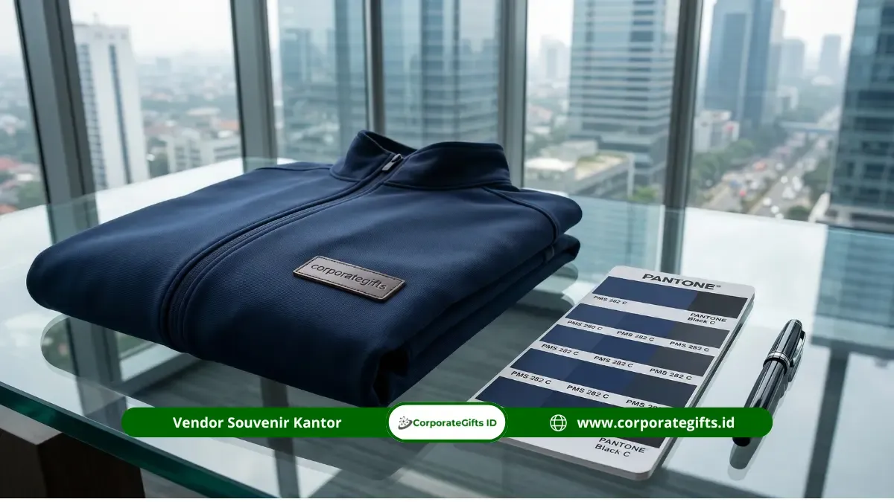

Corporate Gifts ID - Enam kesalahan umum saat memesan souvenir custom apparel perusahaan adalah tidak menentukan jumlah pesanan sejak awal, melewatkan mockup approval, salah memilih bahan, mengabaikan waktu produksi, warna logo tidak konsisten, dan memilih vendor hanya berdasarkan harga termurah.
Keenam kesalahan ini paling sering muncul pada perusahaan yang memesan souvenir custom apparel secara mendadak tanpa perencanaan matang, sehingga hasil akhir produk berisiko tidak sesuai standar branding perusahaan.
Dampaknya bisa terlihat dari souvenir yang terlambat tiba, kualitas jahitan atau bordir yang tidak rapi, hingga warna logo yang berbeda antar batch produksi dan berpotensi merusak citra brand di mata karyawan maupun klien.
Artikel ini merangkum enam kesalahan tersebut beserta solusi praktisnya, agar tim procurement dapat menyiapkan pesanan souvenir custom apparel perusahaan yang lebih matang dan minim risiko revisi.
Poin Kunci Pesanan Custom Apparel:
- Faktor Risiko Utama: Enam kesalahan umum mencakup perencanaan jumlah, mockup approval, pemilihan bahan, waktu produksi, konsistensi warna logo Pantone, dan seleksi vendor.
- Dampak Branding Nyata: Riset PPAI mencatat 66 persen konsumen mampu mengingat nama brand pada produk berlogo yang mereka terima dalam 12 bulan terakhir, membuktikan presisi kualitas eksekusi sangat vital (Sumber: PPAI Research).
- Pencegahan Sejak Dini: Sebagian besar kesalahan ini sebenarnya dapat dihindari melalui komunikasi spesifikasi teknis yang jelas sejak tahap konsultasi awal bersama vendor.
- Pendampingan End-to-End: CorporateGifts.ID mendampingi proses pemesanan secara menyeluruh agar souvenir custom apparel perusahaan bebas dari kesalahan umum yang merugikan.
1. Tidak Menentukan Jumlah Pesanan Sejak Awal
Banyak perusahaan baru menentukan jumlah pesanan mendekati hari acara, sehingga vendor kesulitan menyesuaikan jadwal produksi maupun minimum order quantity (MOQ) yang efisien.
Akibatnya, biaya per unit bisa lebih tinggi dan risiko keterlambatan pengiriman meningkat, terutama jika pesanan melibatkan banyak variasi ukuran (size chart S, M, L, XL, hingga XXL) atau varian warna kain.
Solusi Praktis:
Tentukan estimasi jumlah peserta atau penerima souvenir custom apparel sejak tahap perencanaan anggaran, bukan setelah desain selesai dibuat, agar vendor punya waktu cukup untuk mengatur jadwal produksi dan memotong kain secara presisi.
2. Mengabaikan Mockup Approval Sebelum Produksi Massal
Melewatkan tahap mockup approval sering menjadi sumber kesalahan terbesar, karena posisi logo atau proporsi warna yang salah baru terlihat setelah produksi massal selesai.
Revisi pada tahap ini jauh lebih mahal dan memakan waktu, bahkan berisiko membuat souvenir custom apparel gagal digunakan pada acara gathering, konvensi, atau seragam kerja yang sudah dijadwalkan.
Solusi Praktis:
Selalu tinjau mockup digital secara detail, termasuk ukuran centimeter logo, posisi bordir di dada kiri atau lengan, dan kode Pantone, sebelum memberikan persetujuan tertulis (approval sign-off) kepada pihak vendor.

Pengecekan kualitas bordir logo dan akurasi warna Pantone pada apparel promosi kantor sebelum proses packing rapi.
3. Memilih Bahan Tanpa Mempertimbangkan Fungsi Pemakaian
Memilih bahan hanya berdasarkan harga termurah tanpa mempertimbangkan fungsi pemakaian dapat membuat souvenir custom apparel cepat rusak atau tidak nyaman dipakai, terutama untuk seragam lapangan, kaos outdoor, atau apparel harian.
| Jenis Bahan Apparel | Karakteristik & Keunggulan | Rekomendasi Pemakaian |
|---|---|---|
| Katun Combed (24s / 30s) | Adem, menyerap keringat maksimal, tekstur lembut ramah di kulit | Kaos gathering, event santai kantor, merchandise seminar |
| Katun Pique / Lacoste | Pori-pori teratur, tebal elegan, sangat pas untuk bordir komputer presisi | Polo shirt seragam kantor, pakaian pameran, event korporasi |
| Polyester Microfiber / Dry-Fit | Cepat kering (quick-dry), ringan, elastis, dan tahan kusut | Jersey olahraga korporat, fun walk kantor, aktivitas outbound |
| Polyester Taslan / Parasut | Tahan air ringan (water-repellent), penahan angin (windproof), durabilitas tinggi | Jaket windbreaker lapangan, rompi proyek, merchandise outdoor |
Solusi Praktis:
Sesuaikan bahan dengan kebutuhan pemakaian, misalnya katun pique untuk kenyamanan seragam harian kantor berkerah atau polyester taslan untuk aktivitas lapangan yang membutuhkan perlindungan cuaca lebih tinggi.
4. Tidak Memperhitungkan Waktu Produksi dan Pengiriman
Souvenir custom apparel perusahaan sering dipesan terlalu mendekati tanggal acara, sehingga vendor tidak memiliki cukup waktu untuk proses potong pola, bordir/sablon, penjahitan, dan quality control yang memadai.
Solusi Praktis:
Ajukan pesanan minimal 2 hingga 4 minggu sebelum tanggal acara, terutama untuk teknik bordir komputer dengan dual-logo branding atau pengiriman ke luar pulau yang membutuhkan estimasi kargo logistik aman.
5. Mengabaikan Konsistensi Warna Logo Pantone
Tanpa kode Pantone resmi, warna logo pada souvenir custom apparel bisa berbeda antara satu batch produksi dengan batch berikutnya, sehingga identitas visual brand terlihat tidak konsisten dan kurang profesional.
Solusi Praktis:
Sertakan kode warna Pantone (PMS) resmi perusahaan atau file master vektor (AI/EPS) pada setiap pemesanan, terutama jika souvenir custom apparel dipesan ulang (repeat order) di kemudian hari.
6. Memilih Vendor Hanya Berdasarkan Harga Termurah
Tergiur penawaran harga termurah tanpa memeriksa portofolio, legalitas resmi, atau standar quality control vendor sering berujung pada hasil bordir kasar, benang lepas, pola kain tidak simetris, atau pengiriman yang meleset dari tenggat waktu.
Solusi Praktis:
Pilih vendor dengan rekam jejak jelas, fasilitas penerbitan faktur pajak resmi, proses mockup approval yang transparan, serta jaminan garansi mutu seperti yang diterapkan oleh tim CorporateGifts.ID.
Pertanyaan Seputar Souvenir Custom Apparel Perusahaan (FAQ)
Kesimpulan Praktis
Menghindari enam kesalahan umum di atas akan membuat proses pemesanan souvenir custom apparel perusahaan lebih lancar dan hasilnya lebih sesuai harapan.
Mulai dari perencanaan jumlah pesanan hingga seleksi vendor terpercaya, setiap detail teknis sangat menentukan prestise dan kenyamanan apparel yang akan dikenakan tim Anda.
Konsultasikan kebutuhan souvenir custom apparel perusahaan Anda bersama tim CorporateGifts.ID agar setiap tahapan berjalan tepat waktu, bergaransi, dan bebas dari kendala produksi yang merugikan.